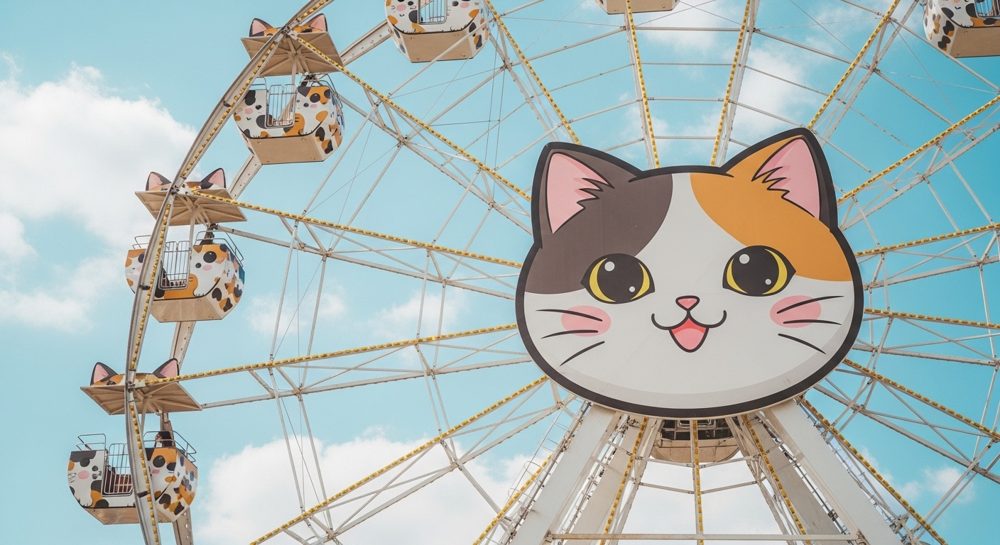
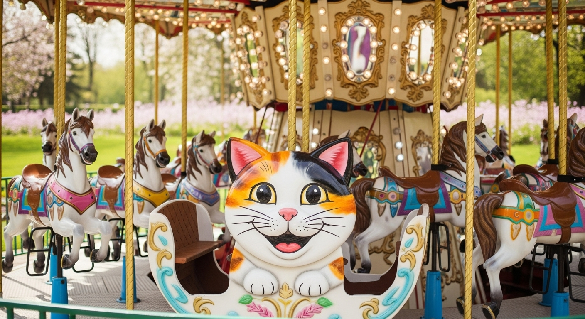
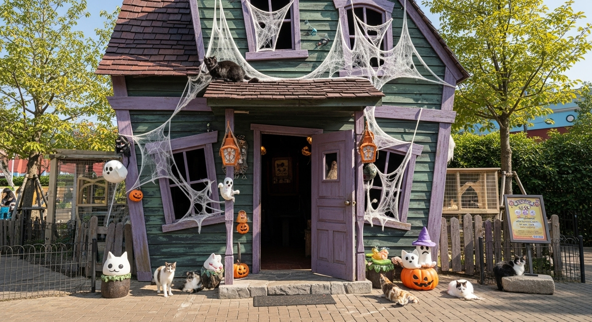
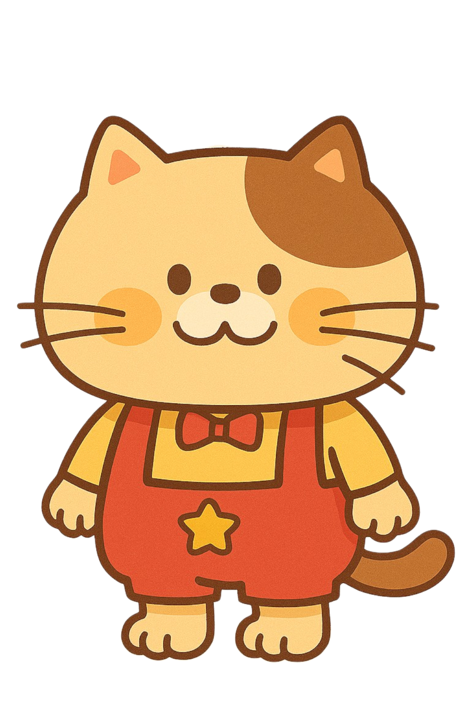
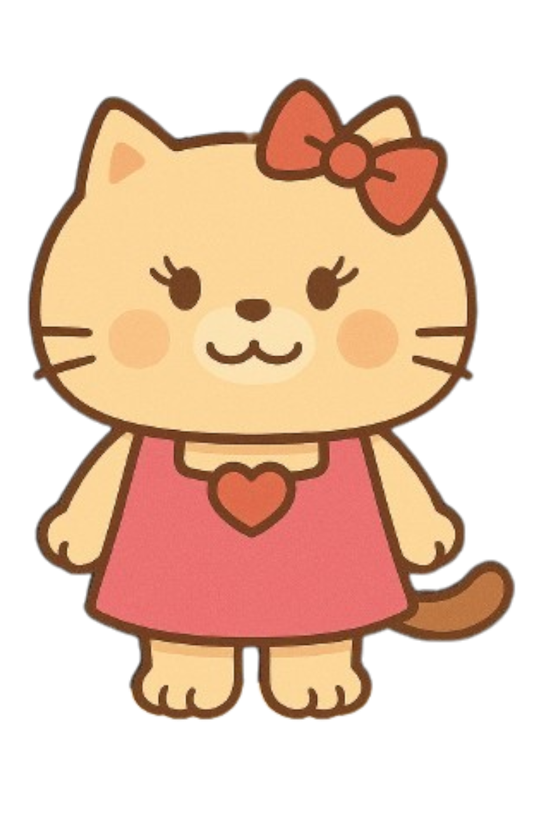
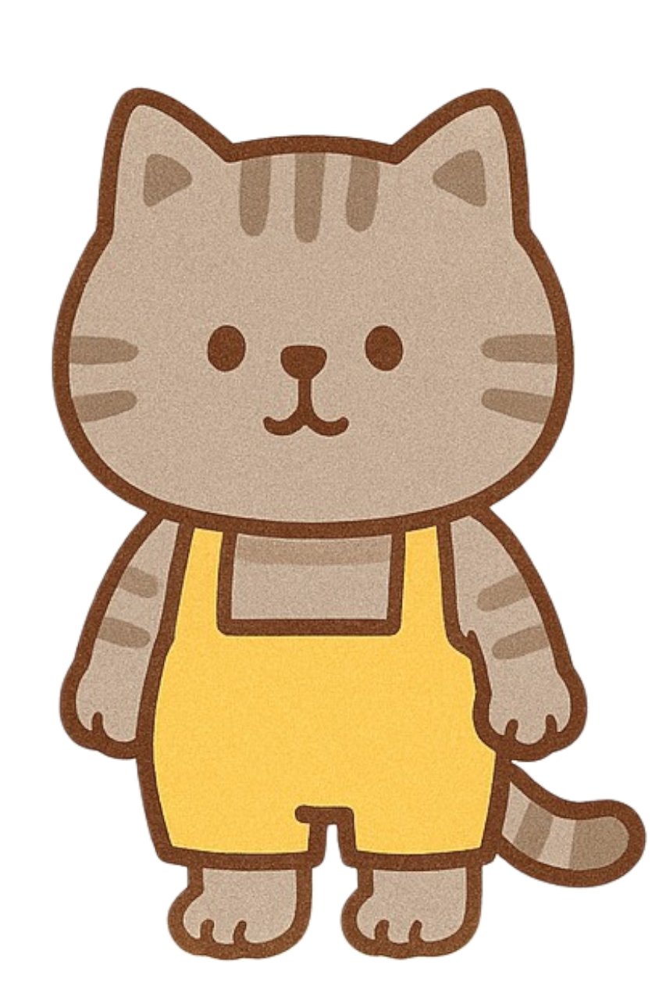

アトラクション紹介

ねこにゃんパーク
ねこにゃんパークは、愛らしい猫たちと心ゆくまで触れ合える、世界でたった一つのテーマパークです。

◉にゃんらんしゃ(観覧車)
にゃんたエリアのシンボル！
空の上からにゃんたエリアをぐるりと見渡せる夢みたいな観覧車です。
🐾 高さ：約30m（にゃんこ30匹分！？）
🕒 所要時間：約7分のふんわり空中散歩

◉メリーゴーにゃんド
おすわりポーズのにゃんこ、しっぽピーンのにゃんこ、のんびりあくび中のにゃんこなど…好きなにゃんこを選んでね♪
🐾 対象年齢：3歳～（保護者同伴OK）
🎶 音楽：オリジナル「にゃんたマーチ」演奏中！

ほわ～ハウス
ちょっとドキドキ、でもとってもゆるカワ！
「ほわ～ハウス」は、こわがりなにゃんこでも楽しめる、やさしいおばけたちのおうち。
🌙 怖さレベル：★☆☆（にゃんこ級）
📷 写真スポット：ほわほわゴーストの横に立って、にゃんタッチ！
キャラクター紹介

にゃん太
ねこにゃんパークの人気者。好奇心旺盛でちょっぴりおっちょこちょいな男の子。みんなを笑顔にするのが大好き！

にゃん子
優しくておっとりした性格の女の子。美しい毛並みと鈴のような鳴き声で、パークに訪れるみんなを癒してくれます

にゃんすけ
物静かでクールに見えるけれど、心優しい男の子。高い場所からパークを見守るのが日課で、そっと影からみんなを支えています